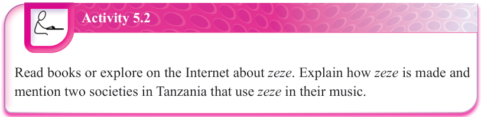

Note that, according to the Hornbostel-Sachs system, the piano is classified as a chordophone. However, some musicians and percussionists argue that the piano belongs to the percussion and not string family because the player presses keys rather than plucking or bowing strings. Hence, its sound is initiated by hammers striking the strings. This makes it similar to percussion instruments like the xylophone. As a result of this debate, the piano is best considered a hybrid instrument. That means it fits into categories of chordophones and percussions.

Activity 5.2
Read books or explore on the Internet about zeze.
Explain how zeze is made and mention two societies in Tanzania that use zeze in their music.
Aerophones
These are also referred to as wind instruments. They are musical instruments that produce sound by vibrating a column of air. Aerophones can further be grouped into brass and woodwind instruments. Brass instruments are made of metal, particularly brass and create sound through the vibration of the player’s lips on the mouthpiece. The air that passes through the player’s lips goes into the air column of the instrument and creates sound. Examples of brass instruments are trumpets, trombones, tuba, horn and cornet. Woodwind instruments create sound when a wooden reed attached to the instrument’s mouthpiece is blown to vibrate and produce sound. Saxophones, clarinets and flutes are good examples of woodwind instruments. Accordion is another example of a wind instrument. It produces sound when the user expands or compresses the bellows while pressing the keys or the buttons. The bellows cause air to flow across metal reeds and produce sound. Baragumu (animal horn) is an example of common traditional aerophones found in Tanzania. It is also known by various names in different societies in Tanzania. For example, it is known as enzamba in Kagera, nhandala in Shinyanga, ndulele in Dodoma and ngarapi in Njombe. Other traditional Tanzanian aerophones include lipenenga in Ruvuma and lilandi in Mara. Figure 5.3 shows examples of aerophones.